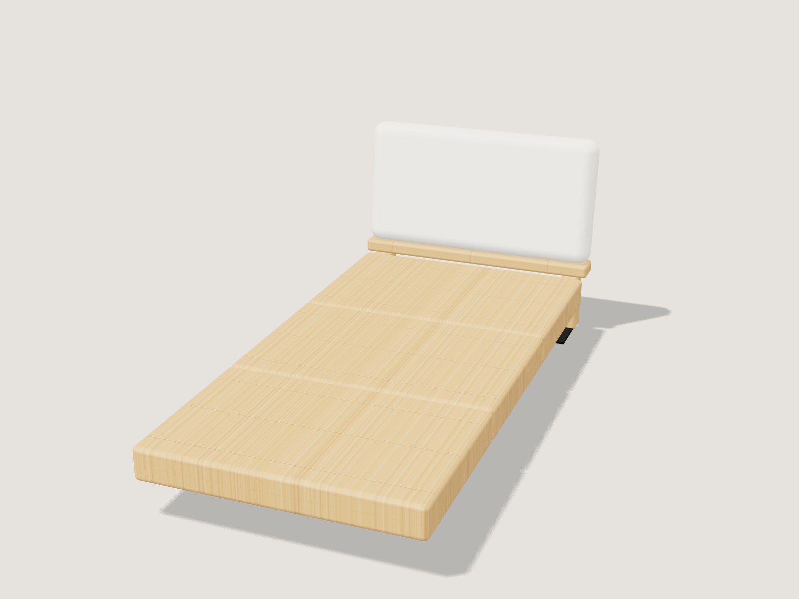
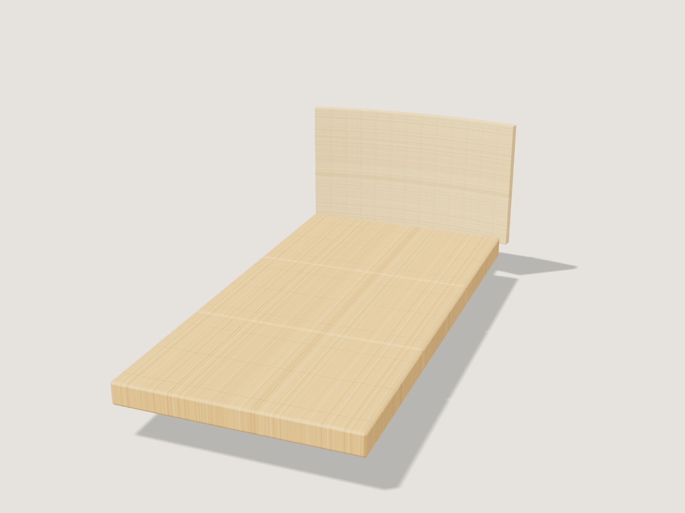
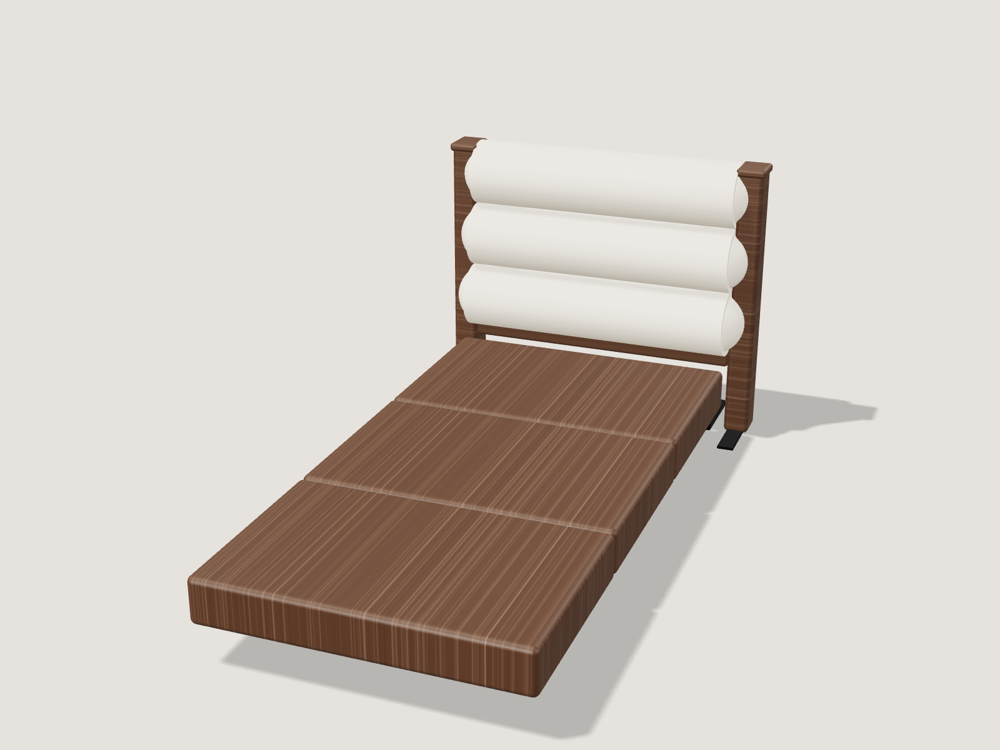
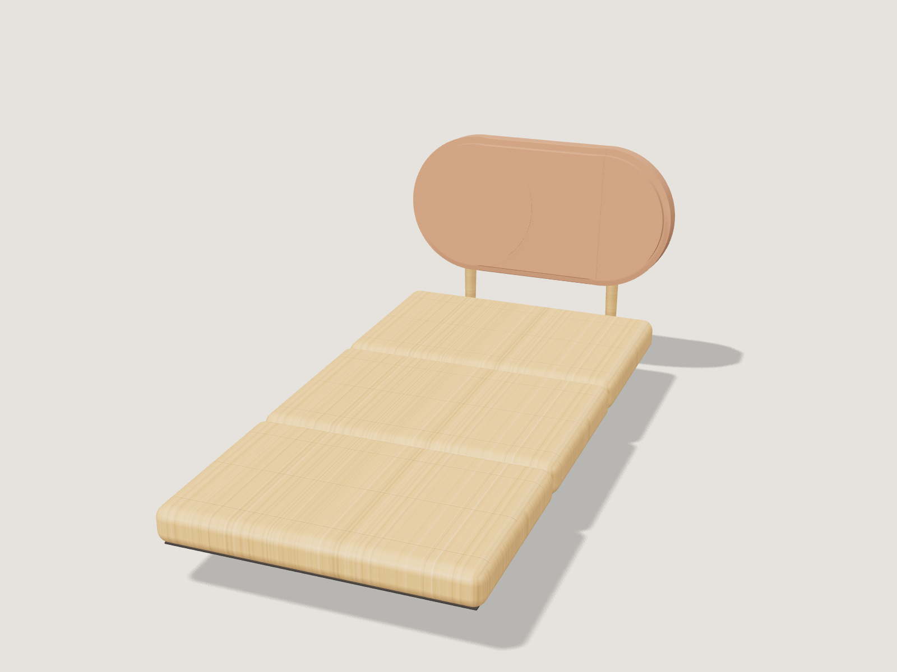
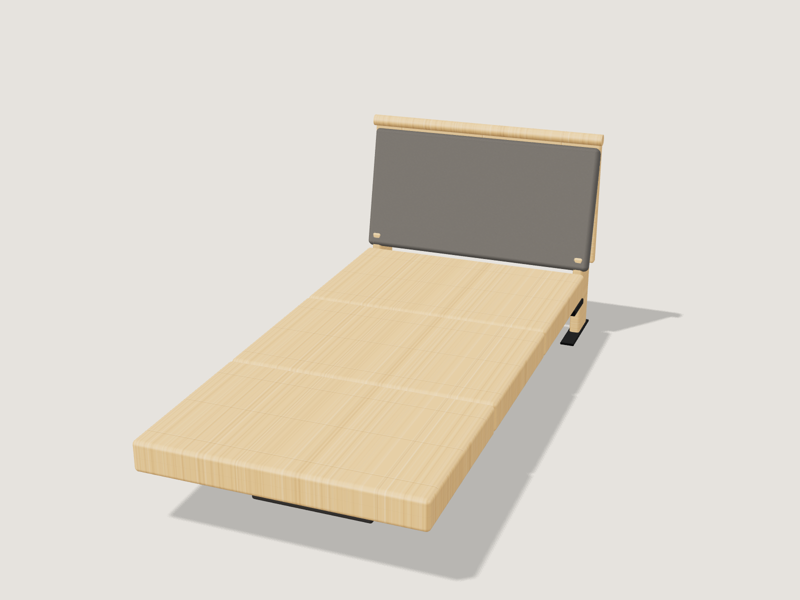
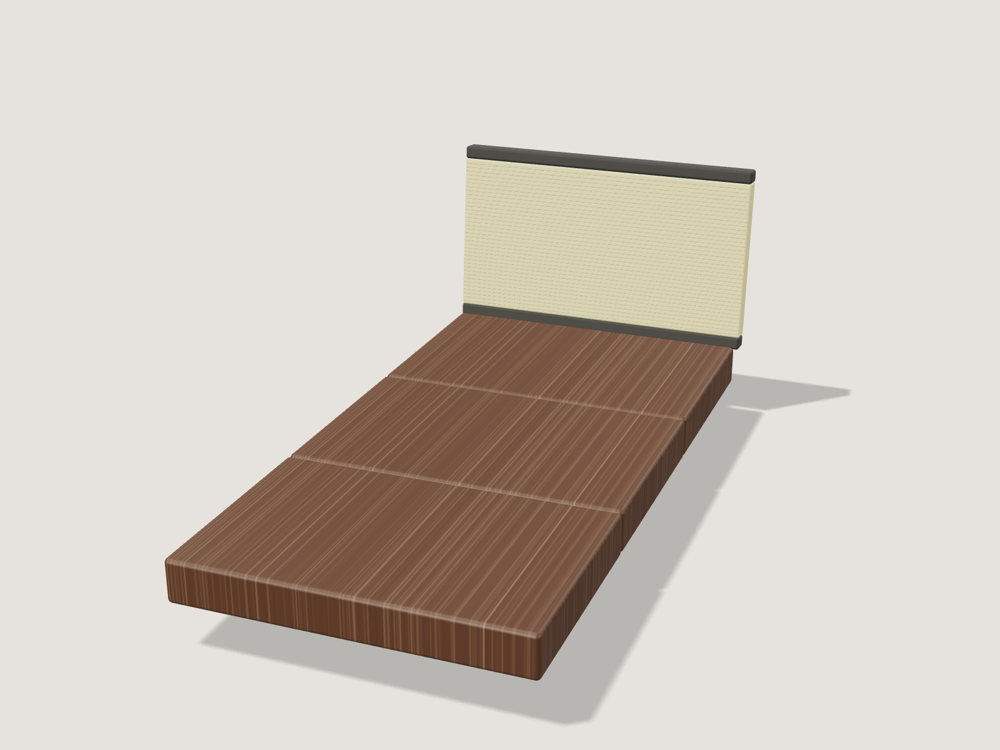
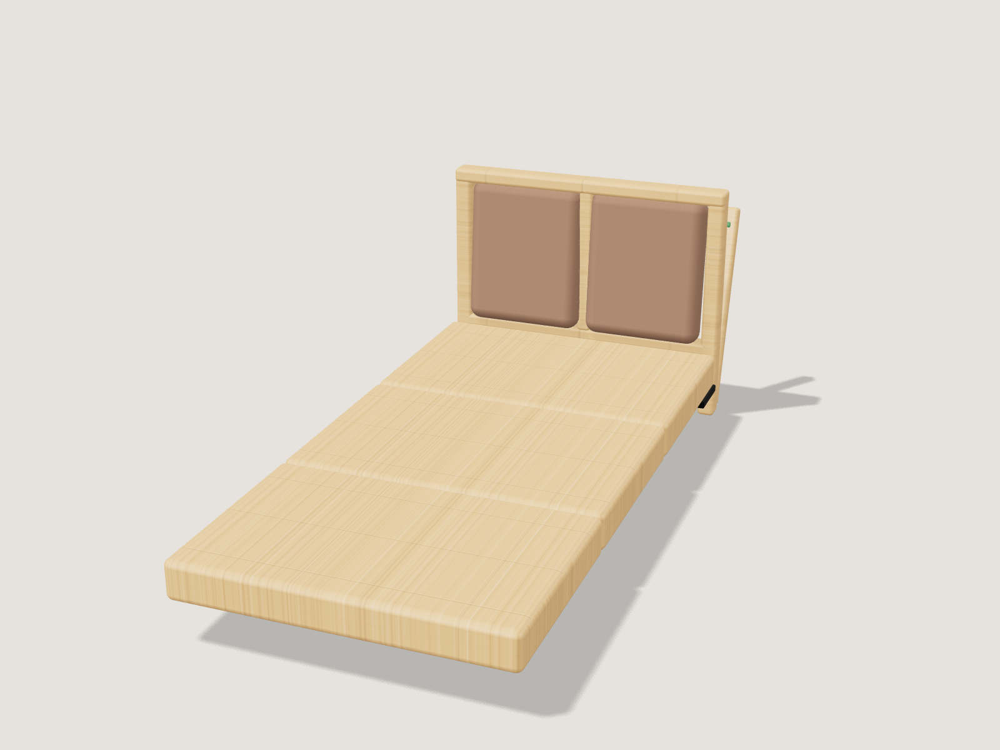
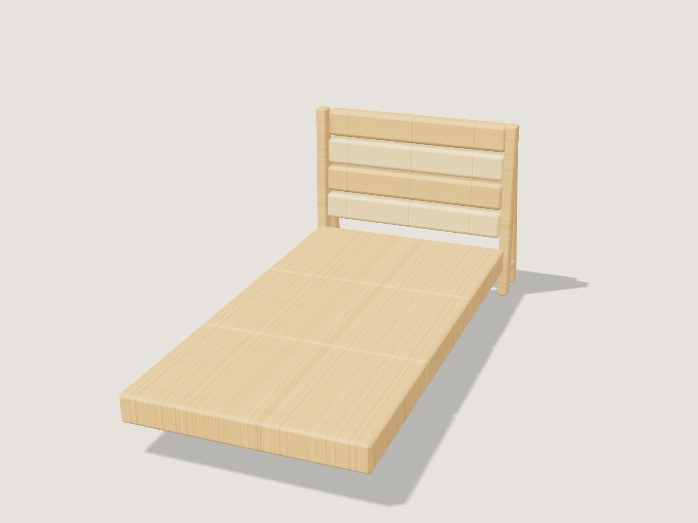
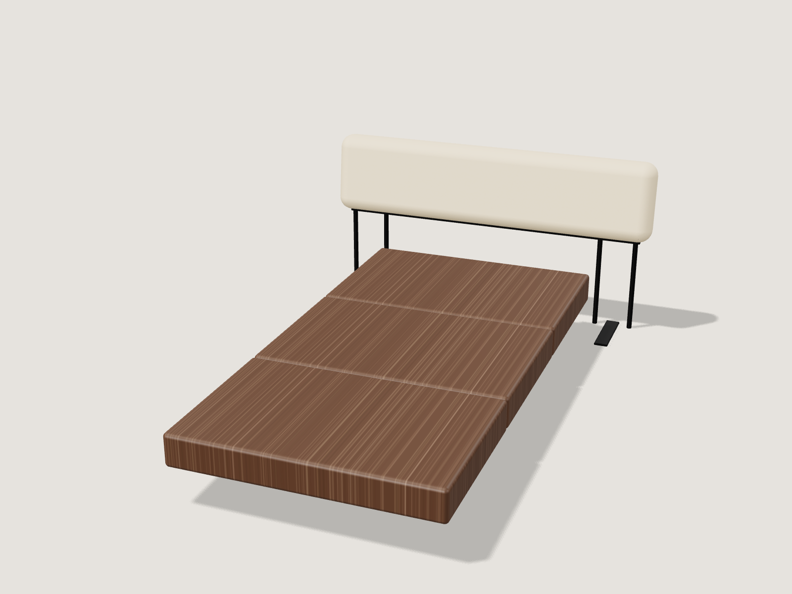
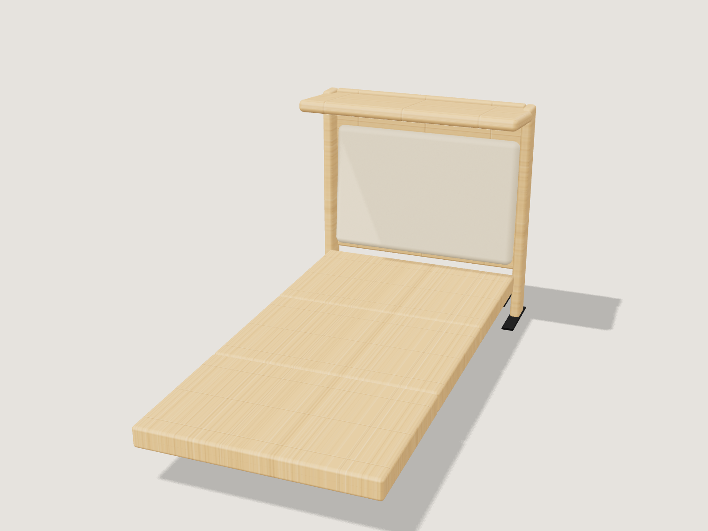

RECOMMENDED

C3-01王道・市場適合型
TAYUTA
竹の台に、ホテルの布パネル。

C3-02ミニマル
SORI
一枚の竹が、浮いて反る。
RECOMMENDED

C3-03プレミアム
TAWARA
俵のロールに、深くもたれる。

C3-04トレンド
MAYU
繭のかたちが、宙に浮く。
RECOMMENDED

C3-05機能特化
KIYORA
ホコリが積もらない形。

C3-06素材特化
TATAMI
畳を、枕元に立てる。

C3-07UX改善
SUTTO
立てる、掛ける、それだけ。

C3-08構造革新
MITSU
三つの足で、浮かせる。

C3-09少し挑戦的
OBI
壁に帯を一本、ベッドを浮かべる。

C3-10コンセプトモデル
HISASHI
ヘッドボードだけで、ベッドを支える。